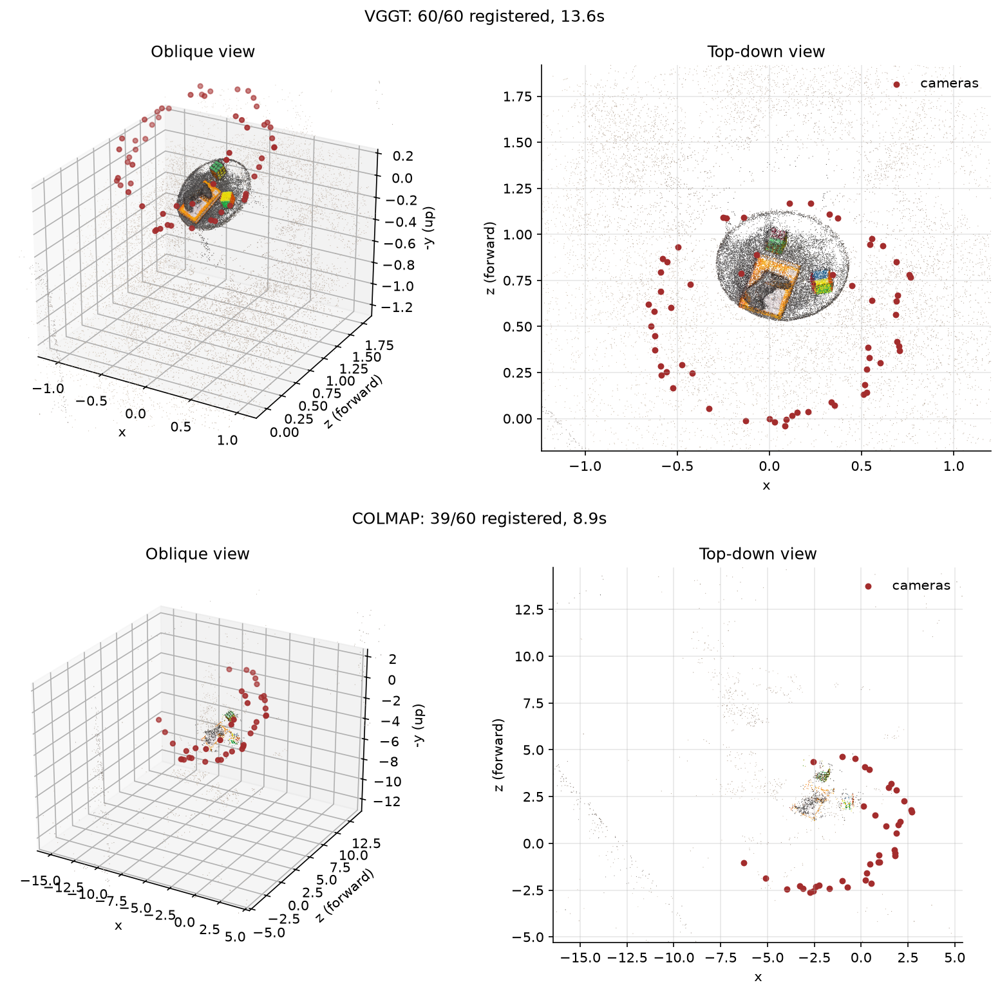

tabletop
60 frames from one phone video, reconstructed by VGGT and by COLMAP from the same frames.
The phone video these frames come from, sped up.
Point cloud
Drag to orbit, scroll to zoom. Points are randomly downsampled for the web.
Gaussian splat
Drag to orbit, right-drag to pan, scroll to zoom. 200,000 Gaussians. Trained from the VGGT poses and points, so it shows how well the splat fits the capture; it is not a novel-view quality score.
Side by side

| Method | Registered | Runtime | Peak VRAM | Points |
|---|---|---|---|---|
| VGGT | 60/60 | 13.6 s | 5.6 GB | 500,000 |
| COLMAP | 39/60 | 8.9 s | n/a | 2,466 |
COLMAP runs on the CPU, so its runtime is not comparable with VGGT's GPU time.